场景参考解决方案¶
本页主要介绍AI EXPRESS沉淀的参考解决方案。解决方案包含IOT以及驾驶相关的场景。相关示例的使用，可以参考常见问题部分。
整体概述¶
场景参考解决方案是在天工开物模型仓库(Model Zoo)中的产品算法之上，将地平线各种量产场景方案进行开放。下图是“天工开物”模型仓库（Model Zoo）产品算法开放列表。
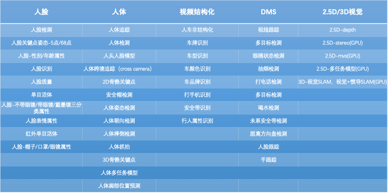
这些产品算法涉及人脸、人体、车辆等多种类别，具备极高的算法质量和精度，可有效避免合作伙伴“重复发明轮子”，大幅节省算法训练和开发的时间与成本。
当前我们选取人脸、人体、车辆部分核心算法模型，沉淀了人脸结构化参考方案,人体结构化参考方案,人体行为分析参考方案,视频盒子参考方案,体感游戏参考方案,usb camera参考方案,apa自动泊车参考方案,车辆结构化参考方案 八个解决方案。
这些参考方案在地平线XJ3系列开发板上可以直接部署运行；大部分解决方案也可以在XJ2系列开发板上直接部署运行。您也可以将这些参考方案轻松迁移到基于地平线芯片的其他硬件设备中。
注意：这些参考方案当前未全部在GitHub上开源，若需要源码与参考模块，可以联系地平线。
参考方案的功能概述如下：
人脸结构化参考方案： 人脸的检测、人脸姿态检测、人脸关键点、人脸跟踪、优选抓拍、人脸特征提取等结构化信息提取； 未开源；计划开源。
人体结构化参考方案： 人体、人脸、人头检测，人体骨骼关键点检测，人体分割，年龄性别等结构化信息提取； 已经开源。
人体行为分析参考方案： 完成摔倒检测、手势识别等人体行为； 未开源，计划开源。
视频盒子参考方案： 通过RTSP协议获取多路视频图像进行多路智能分析； 未开源，计划开源。
体感游戏参考方案： 通过视觉分析实时画面中人员的跳跃、跑步等动作，完成游戏内角色的动作控制； 未开源，计划开源。
usb camera参考方案： X3开发板作为USB设备，插入USB宿主机。X3开发版外接MIPI sensor，完成图像编码、视觉分析，基于标准的UVC协议将视频传输给USB宿主机；基于HID或者RNDIS协议将结构化智能结果传输给USB宿主机；基于标准UAC协议将音频数据传输给USB宿主机； 未开源。
apa自动泊车： XJ3开发板接入4路sensor，完成4路图像的视觉分析，输出可行驶区域、障碍物检测框、停车位检测框以及停车位分割结果；支持can信号的传输。当摄像头完成实车标定，且实现控车逻辑后，能够完成自动泊车功能； 未开源，计划开源。
车辆结构化参考方案： 完成车辆检测、车牌检测与识别、车辆类型识别等结构化信息提取； 未开源。
人脸结构化¶
我们选取人脸检测，人脸5关键点，人脸姿态，年龄性别，口罩检测五个产品模型，附加MOT人脸跟踪，人脸打分以及人脸抓拍三个业务策略，构建一个完整的人脸抓拍Workflow。
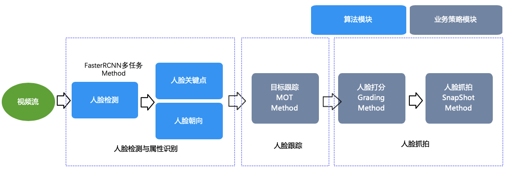
其中使用XStream内置Method如下所示：
| Method | 类型 | 输入 | 输出 |
|---|---|---|---|
| FasterRCNNMethod | 算法 | 图像帧 | 人脸框、关键点、姿态 |
| MOTMethod | 策略 | 人脸框 | 带有trackID的人脸框及消失目标集合 |
| CNNMethod | 算法 | 带有trackID的人脸框、图像帧 | 年龄性别、口罩属性 |
| GradingMethod | 策略 | 人脸框、姿态、关键点 | 目标优选分值 |
| SnapshotMethod | 策略 | 图像帧、人脸框、目标优选分值 | 抓拍图列表 |
| CNNMethod | 算法 | 抓拍图列表 | 人脸特征 |
FasterRCNNMethod算法方法，我们采用多任务(MultiTask)实现方式，同时挂载人脸检测，人脸5关键点，人脸姿态三个模型。它可以针对输入图片进行结构化，输出图片中每个目标的人脸框、关键点、姿态.
MOTMethod：采用了基于IOU策略的MOT跟踪算法，它对输入时序化的人脸框进行跟踪，输出带有trackID的人脸框和消失目标的集合。
GradingMethod：是一个人脸框打分的策略模块，它综合考虑人脸框大小、关键点置信度，遮挡以及姿态等信息，输出单个目标的人脸框图片置信分数，用于后续优选抓拍。
SnapshotMethod：是一个抓拍的策略模块，基于MotMethod输出Tacklet以及GradingMethod输出的人脸框打分信息，在内存维持一个优选帧序列，针对一个Tracklet输出它的的抓拍图。
CNNMethod算法方法，包括年龄性别，口罩检测以及人脸特征提取三种模型，可以对输入的检测框或抓拍列表，输出图片中目标的属性。
在人脸抓拍workflow上，除了目前提供的性别/年龄属性，口罩检测等模型，还可以继续追加人脸活体、人脸质量等模型，进而丰富整个人脸结构化数据流。
在人脸结构化参考方案中，我们也提供了一个人脸识别Workflow，通过在SnapshotMethod抓拍策略后，追加CNNMethod来实现对抓拍人脸图的特征提取。
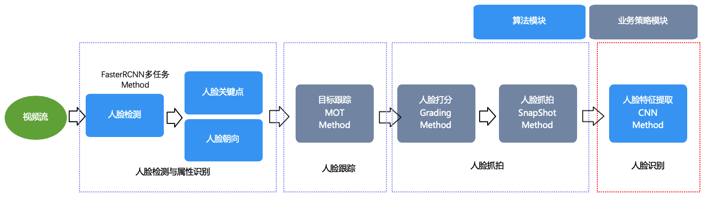
关于人脸结构化参考方案，详细参考README。
人体结构化¶
人体结构化是人工智能领域常见的应用场景。AIExpress提供的人体结构化参考方案(已在github开源)，支持如下功能：
1)对视频图像中人的头部和身体进行检测、跟踪; 2)人的身体跨不同摄像头跟踪; 3)人身体骨骼关键点检测; 4)人身体抓拍; 5)人脸框检测; 6)人脸关键点检测; 7)人体分割; 8)年龄性别等结构化信息。
此外，还提供一些定制化处理策略(如，综合选取效果最好的人脸检测框、人头检测框、人体检测框进行融合)，可以得出当前场景下效果较好的结构化智能数据。
开发者不仅可直接使用人体结构化参考方案输出的智能数据进行开发，也可以根据自身业务需要，参考已有的解决方案，完全独立开发属于自己的方案，并且独立开发解决方案这件事，并不复杂。
人体结构化参考方案，目前支持对从摄像头获取到的实时图像直接分析输出智能结果，此外，也支持对已有的本地视频进行智能分析。
人体结构化工作流程(workflow)示意图如下：
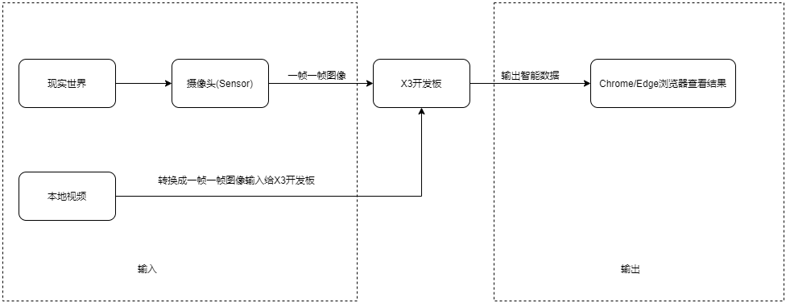
人体行为分析¶
行为分析是智能应用的典型场景之一，在该场景下地平线提供了摔倒检测和手势识别两个参考方案。基于它们，您可以快速迁移自己的算法模型或策略，搭建起自己的行为分析方案。
摔倒检测参考方案模块框图如下：
VIO处理图像输入。目标检测对人脸、人头、人体的检测，输出检测框。目标跟踪模块使用基于IOU的跟踪策略对目标进行跟踪，给检测框赋trackID，并给出消失目标集合。关键点检测模块输出人体骨骼关键点。框融合模块基于IOU和骨骼关键点（可选）对人脸、人头、人体框进行融合。之后利用检测框和骨骼关键点对摔倒、举手、蹲下等动作进行识别。投票模块结合滑动窗口对识别结果进行投票平滑。
手势识别参考方案模块框图如下：
VIO处理图像输入。之后进行手的检测和跟踪。关键点检测模块输出手部关键点。之后利用检测框和手部关键点进行手势识别，目前支持左右手静态手势。投票模块结合滑动窗口对识别结果进行投票平滑。
参考方案中使用的XStream Method如下所示：
| 模块 | 类型 | 输入 | 输出 |
|---|---|---|---|
| FasteRCNNMethod | 算法 | 图像帧 | 人脸、人头、人体、人手检测框，人体关键点 |
| MOTMethod | 策略 | 检测框 | 带有trackID的检测框及消失目标集合 |
| MergeMethod | 策略 | 人脸、人头、人体、框，trackID，骨骼关键点（可选） | 融合后的人员ID |
| CNNMethod | 算法 | 检测框、图像帧 | 人手关键点 |
| CNNMethod | 算法 | 检测框、骨骼/人手关键点 | 摔倒、手势识别 |
| BehaviorMethod | 策略 | 人体框、骨骼关键点 | 举手、站立、下蹲等行为属性 |
| VoteMethod | 策略 | 摔倒、手势识别结果 | 投票平滑后的识别结果 |
参考方案中使用的XProto Plugin如下所示：
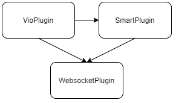
VioPlugin 接入sensor/回灌图像，获取图像的金字塔数据。
SmartPlugin完成模型的预测。SmartPlugin内部实现基于XStream-Framework框架。
WebsocketPlugin 将原图、感知结果通过以太网发送给web展示端。web展示端源码开放。
人体行为分析的代码在solution_zoo/body_solution中。使用的配置文件为solution_zoo/body_solution/configs/behavior_solution.json和solution_zoo/body_solution/configs/gesture_solution.json。
摔倒检测和手势识别的开发教程可参考地平线AI社区上的文章：
借助AI Express实现摔倒检测
借助AI Express实现手势识别
视频盒子¶
多路视频分析盒子方案采用地平线X3处理器，支持多达8路视频流分析。根据模型能力配置，可以实现人头、人体、人脸检测，人体骨骼关键点提取，人脸抓拍，人脸识别等多种功能。对于开发者来说，通过替换深度神经网络模型可以快速实现自己定义的功能。
多路视频盒子整体方案如下图所示 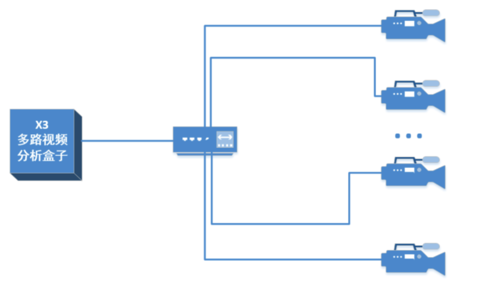 X3多路视频分析盒子与前端图像采集设备如IPC通过网口进行连接。前端采集设备采集实时视频并压缩编码，X3多路视频分析盒子通过拉取图像采集设备的RTSP码流获得视频输入。
X3多路视频分析盒子内部数据流向示意图如下两图所示：
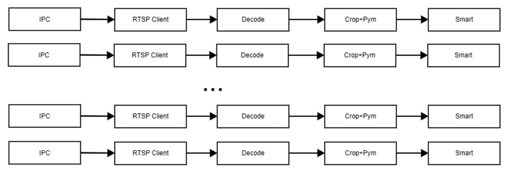
 首先通过RTSP Client获取前端视频采集设备发送的码流，然后对码流进行解码获得NV12格式的图像，接着对该NV12进行裁剪以满足模型输入需要，对裁剪后的NV12图像做金字塔下缩放，最后将金字塔图像送给smart plugin进行智能分析得到结构化数据。整个流程涉及X3的几个功能模块，其中Decode会用到VPS模块，Crop+Pym会用到IPU模块，而smart plugin会使用到BPU模块。
首先通过RTSP Client获取前端视频采集设备发送的码流，然后对码流进行解码获得NV12格式的图像，接着对该NV12进行裁剪以满足模型输入需要，对裁剪后的NV12图像做金字塔下缩放，最后将金字塔图像送给smart plugin进行智能分析得到结构化数据。整个流程涉及X3的几个功能模块，其中Decode会用到VPS模块，Crop+Pym会用到IPU模块，而smart plugin会使用到BPU模块。
RTSP Client这里以开源live555项目的testRTSPClient为基础进行开发，实现根据配置文件进行多路拉流。这里有一个地方需要注意，如果将获取的裸码流直接保存成H264或者H265文件并不能直接被播放器播放。还缺少SPS、PPS数据头，每帧之间缺少start code（0x00 0x00 0x00 0x01）。获取SPS、PPS有两种方式，一种是调用live555的”MediaSubsession::fmtp_spropparametersets()”生成SPS、PPS信息；另一种是大多数的设备在发送IDR帧之前会先发送SPS、PPS信息。无论哪种方式，start code需要自己添加。
Decode可以根据需要配置H264解码或者H265解码，也可以根据需要配置只解码I帧和P帧，或者只解码I帧以减少带宽占用减轻压力。
Crop+Pym这里为什么需要对图像进行剪裁？对于1080P分辨路的码流，Decode解码出来的图像并非19201080大小，而是19201088，而在涉及模型的时候一般认为输入的大小，是19201080或者960540。为了匹配模型的输入分辨率限制这里对解码出来的图片进行剪裁和金字塔缩放。金字塔缩放比较灵活，基础层宽、高分辨率均是上一层的一半，基础层之间还有三个可配置分辨率的层。Crop+Pym的功能实现在X3的VPS模块中。
Smart是负责对图片进行处理获得结构化数据，目前每一路的视频输入都是对应一个独立的samrt处理，这意味着可以根据实际需要每一路做不同的处理方式，比如有的用来做人头、人脸、人体检测，有的用来做分割，等等。
为了直观显示智能数据处理结果，这里将处理后的图像直接通过VOT模块输出至HDMI，将1080P分辨的显示器连接到开发板上即可看见结果。
图像处理的具体流程如下图所示：

视频盒子的代码在solution_zoo/video_box。配置文件在solution_zoo/configs/rtsp.json以及video_box/configs/body_solution.json。 AI EXPRESS版本包编译部署后，在J3上可以直接使用如下命令运行：
sh run.sh
// 后续根据提示完成
体感游戏¶
体感游戏是一款通过肢体控制游戏角色的互动类智能游戏。 通过视觉分析实时画面中人员的跳跃、跑步等动作，游戏app获取人员的动作数据进行控制游戏角色的跳跃、攻击。 目前支持CrappyBird、PandaRun两款游戏，支持跳跃以及攻击等行为。
本示例用到了vioplugin、smartplugin和websocketplugin三个插件，如下示例图 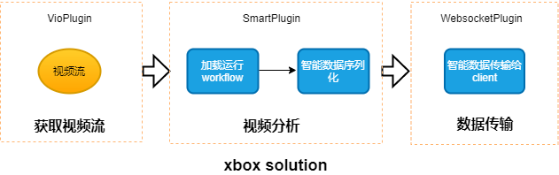
vio获取视频图像，smartplugin对视频图像进行行为分析，然后把行为分析结果送给websocketplugin，websocketplugin把算法结果数据封装成proto格式的数据，通过网络传送给游戏逻辑。
smartplugin模块串联行为分析的workflow，如下图所示： 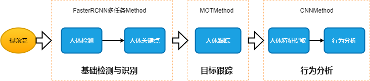
workflow中使用了FasterRCNN多任务Method、MOTMethod、CNNMethod三个method，详细说明如下：
| 模块 | 类型 | 输入 | 输出 |
|---|---|---|---|
| FasteRCNNMethod | 算法 | 图像帧 | 人脸人头人体框、人脸关键点和姿态、人体关键点 |
| MOTMethod | 策略 | 人脸框 | 带有trackID的人脸框及消失目标集合 |
| CNNMethod | 算法 | 图像帧、人体框 | 人体特征 |
| CNNMethod | 算法 | 人体特征 | 人体行为 |
FasterRCNN识别人体，MOT进行人体跟踪，CNNMethod提取人体特征后分析人体行为，输出人体行为结果。
AI EXPRESS版本包编译部署后，在J3上可以直接使用如下命令运行：
sh run.sh
// 后续根据提示完成
实际测试时，保证整个人在摄像头中，通过web展时段调整远近，能识别出人体框、骨骼线即可。 打开浏览器，输入地址即可试玩游戏（IP换成设备实际的地址）：
查看摄像头画面：http://IP
CrappyBird游戏：http://IP/CrappyBird
PandaRun游戏： http://IP/PandaRun 体感游戏详细的开发教程可参考开发者社区上的文章：借助AI Express快速开发AI体感游戏
usb camera¶
usb camera参考方案基于uvc+hid协议，向用户提供了通过usb拉取视频和智能数据的方法，用户可在pc端通过potplayer,amcap等第三方播放器观看视频效果，也可在android设备端通过地平线开发的app观看视频和智能结果展示。应用场景包括智慧电视等基于usb传输的多媒体设备。
目前usb camera方案支持nv12,mjepg,h264等编码格式，用户可通过播放器动态选择。
apa自动泊车¶
APA自动泊车是驾驶领域典型场景之一，地平线提供的示例框图如下所示： 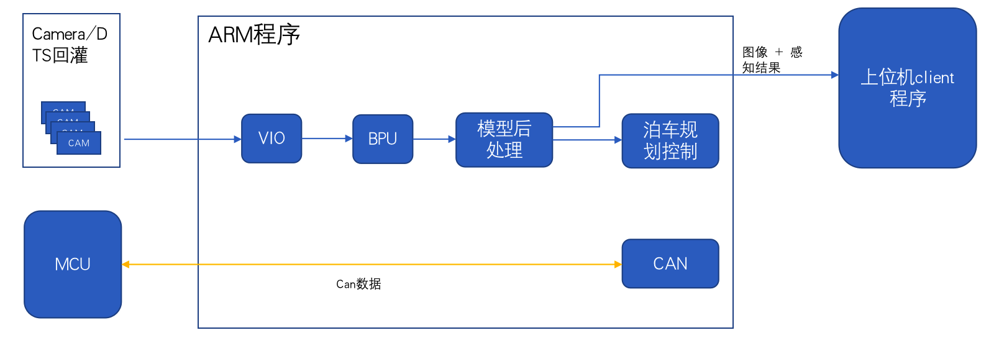
VIO模块用于处理图像的输入，apa示例支持4路图像的输入，利用GDC变换生成IPM俯视图。
BPU用于基于视觉的预测，apa示例中使用工具链嵌入式预测库bpu-predict完成模型的预测。提供的示例支持:
1)行人、两轮车、机动车、地锁的检测；
2)可行驶区域的分割；
3)停车位检测以及停车位角点检测；
4)停车位分割等apa场景所依赖的感知结果。
模型后处理运行在J3 Arm，完成感知结果的解析。
泊车规划控制会基于前的感知结果以及CAN信号，完成路径规划，车辆控制等，当前开放的示例不包含泊车规划控制部分。
上位机程序完成多路图像以及对应感知结果的渲染展示。
CAN模块，完成can数据透传，用于车载CAN设备与J3双向通行。不同车型，需要进行can协议适配。
基于这套示例，车厂或者Tier1能够快速学习J3、系统软件、工具链以及中间件，将自己的算法与策略移植到J3，缩短开发时间，缩短time-to-market。
APA相关的示例代码在solution_zoo/apa中，注意：暂未在GitHub上开放。
代码基于XProto应用开发框架，完成模块的解耦。代码中模块组件示意图如下所示： 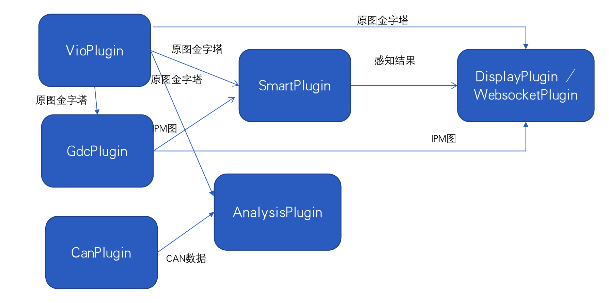
VioPlugin 接入4路10635 sensor/DTS回灌图像，获取4路图像的金字塔数据。
GdcPlugin对4路图像进行GDC变换，生成IPM俯视图。
SmartPlugin完成模型的预测。原图与IPM俯视图是不同的算法模型。SmartPlugin内部实现基于XStream-Framework框架。
CanPlugin 完成can数据双向透传。注意不同的车型，can对接部分需要预先适配。
DisplayPlugin 将原图、IPM图、感知结果、以及其余需要的数据，封装到pb中，通过zmq协议，以太网通路，发送给上位机client客户端(驾驶专业客户端)展示，该展示端源码不开放
WebsocketPlugin 将原图、IPM图、感知结果通过以太网发送给web客户端。web客户端源码开放。
AnalysisPlugin 是一个空壳子，作用是方便客户移植已有的模型、策略至ai express框架。里面仅仅是简单地接收原图与can消息，无其他逻辑
APA运行时需要搭配专用的系统镜像，外接4路10635 sensor 或者DTS回灌，需要对车辆进行标定。
AI EXPRESS版本包编译部署后，在J3上可以直接使用如下命令运行：
sh run.sh
// 后续根据提示完成
使用的配置保存在源码solution_zoo/apa/configs目录,具体如下:
| 参考解决方案 | 部署包中相关配置文件 |
|---|---|
| multivioplugin | apa/configs/vio_config.json.j3dev; apa/configs/camera.json.j3dev; apa/configs/hb_xj3dev.json; apa/configs/ov10635_yuv_1280x720_offline_Pipeline_960_4pipes.json |
| multismartplugin | apa/configs/apa_config.json; apa/configs/detection.json |
| displayplugin | apa/configs/displayplugin_config.json |
| multiwebsocketplugin | apa/configs/websocket_config.json |
| gdcplugin | apa/configs/gdcplugin_config.json |
车辆结构化¶
本方案暂未对外开放
车辆结构化参考方案是地平线在车路协同领域的沉淀，参考方案框图如下所示：
VIO处理图像输入。BPU使用工具链嵌入式预测库bpu-predict完成基于视觉的模型预测。模型后处理运行在J2 ARM，解析感知结果。感知结果（和图像）将被发送到web展示端或AP侧。
目前，车辆结构化支持的功能如下：
机动车相关检测：包括车辆，车牌的检测，以及车体颜色，车类型的属性识别。
非机动车和行人的检测
机动车，非机动车，行人的跟踪以及框级别的融合
基于该参考方案，您能够快速学习J2、系统软件、工具链以及中间件，移植您的算法与策略，缩短开发时间，缩短time-to-market。
车辆结构化相关的示例代码在solution_zoo/vehicle中，注意：暂未在GitHub上开放。
车辆结构化参考方案基于XProto应用开发框架，完成模块的解耦。使用了如下组件：
VioPlugin 接入sensor/回灌图像，获取图像的金字塔数据。
SmartPlugin完成模型的预测。SmartPlugin内部实现基于XStream-Framework框架。
WebsocketPlugin 将原图、感知结果通过以太网发送给web展示端。web展示端源码开放。
HbipcPlugin 将感知结果/丢帧信息发送到AP侧。HbipcPlugin和WebsocketPlugin不同时使用。
关于车辆结构化参考方案，详细参考README。